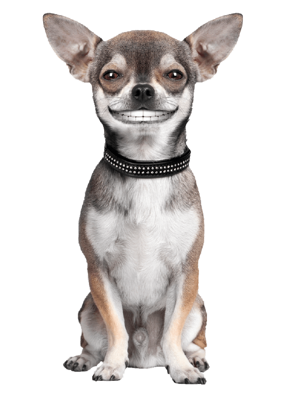

<app-nav-bar></app-nav-bar>
 <section>
   <div style="align-content: center">
    <h2>Al parecer estamos</h2>
    <h1>perdidos!</h1>
    <div style="position: absolute;">

      <button class="button" onclick="onclick()" type="menu" style="vertical-align:middle"><span>go Home</span></button>
    </div>

   </div>

</section>
  <section class="flex-container">
    <div>
      <div class="wave">

        <svg viewBox="0 0 500 150" preserveAspectRatio="none" style="height: 100%; width: 100%;">
          <path d="M297.40,-99.18 C1.12,74.50 270.31,-2.48 294.58,175.15 L500.00,150.00 L500.00,0.00 Z" style="stroke: none; fill: #feb53a; background: transparent linear-gradient(38deg, #FEB53A 0%, #D65C15 100%) 0% 0% no-repeat padding-box;">

          </path>
        </svg>
        <div class="bg-logo">

          <div class="img">
              <div class="logo">
                  
              </div>
          </div>


      </div>
    </div>
    </div>

  </section>

